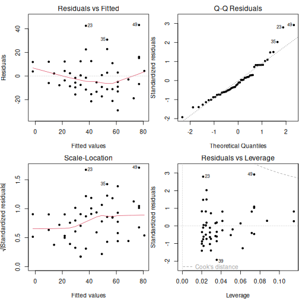

% Converting Markdown to Other Formats with knitr::pandoc() % Yihui Xie % March 1st, 2013
A bit introduction here.
You can use traditional Markdown syntax, such as links and code.
Of course you can write lists:
Or ordered lists:
hi hi
hello hello
howdy howdy
fit = lm(dist ~ speed, data = cars)
b = coef(fit) # coefficients
summary(fit)
##
## Call:
## lm(formula = dist ~ speed, data = cars)
##
## Residuals:
## Min 1Q Median 3Q Max
## -29.07 -9.53 -2.27 9.21 43.20
##
## Coefficients:
## Estimate Std. Error t value Pr(>|t|)
## (Intercept) -17.579 6.758 -2.60 0.012 *
## speed 3.932 0.416 9.46 1.5e-12 ***
## ---
## Signif. codes: 0 '***' 0.001 '**' 0.01 '*' 0.05 '.' 0.1 ' ' 1
##
## Residual standard error: 15.4 on 48 degrees of freedom
## Multiple R-squared: 0.651, Adjusted R-squared: 0.644
## F-statistic: 89.6 on 1 and 48 DF, p-value: 1.49e-12
The code will be highlighted in all output formats.
par(mfrow = c(2, 2), pch = 20, mar = c(4, 4, 2, .1), bg = 'white')
plot(fit)

Our regression equation is \(Y=-17.5791+3.9324x\), and the model is:
$$ Y = \beta_0 + \beta_1 x + \epsilon$$